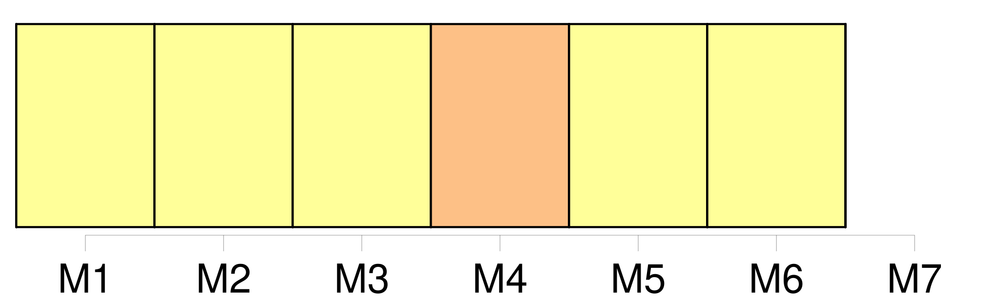
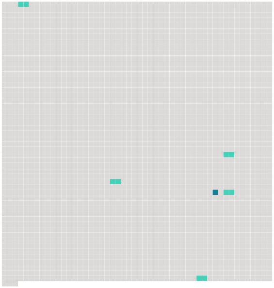

Longueur nb maillons : 6 mentions |
 |
Pendant ce temps [la nuit] s'était faite, et de grandes ombres s'entassaient dans les recoins de la cuisine, comme des chauves-souris qui s'accrochent aux angles des murailles par les doigts de leurs ailes membraneuses. [34 phrases] Depuis quelques instants, Béelzébuth paraissait inquiet, il levait la tête comme s'il subodorait quelque chose d'inquiétant ; il se dressait contre la fenêtre et appuyait ses pattes aux carreaux, cherchant à percer le noir sombre de [la nuit] rayé de hachures pressées de pluie ; son nez se fronçait et s'agitait. [7 phrases] Qui pouvait à cette heure venir troubler la solitude du manoir et le silence de [la nuit] ?? [3 phrases]
Le reflet de la flamme pénétrait ses phalanges amincies et les teignait d'un rouge diaphane, en sorte que, quoique [ce] fût [la nuit] et qu'il marchât suivi d'un chat noir au lieu de précéder le soleil, il méritait l'épithète appliquée par le bon Homère aux doigts de l'Aurore. [23 phrases]
Quoiqu'on ne fût encore qu'au début de l'automne, un peu de feu était nécessaire pour sécher les vêtements humides de ces dames ; d'ailleurs [la nuit] était fraîche et l'air sifflait par les boiseries disjointes de cette pièce inhabitée. |
 |
Il est possible de télécharger la ressource sur la page Ortolang |
Si vous avez des questions ou vous voyez des erreurs, merci d'envoyer un mail à silvia.federzoni89@gmail.com |